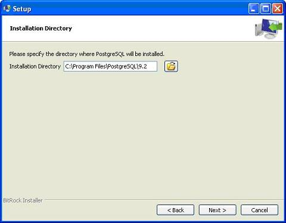
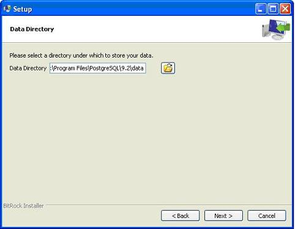
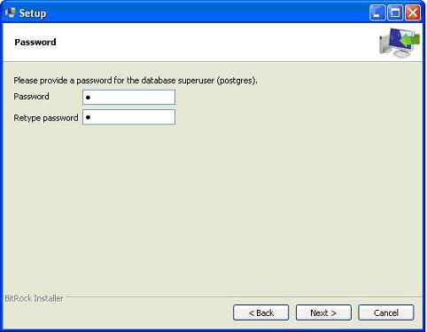
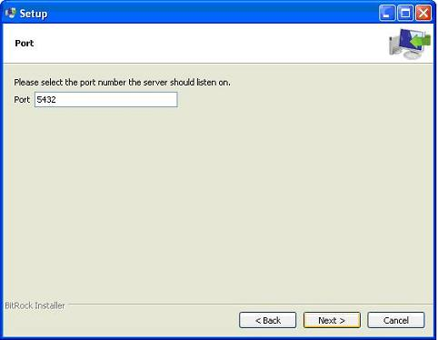
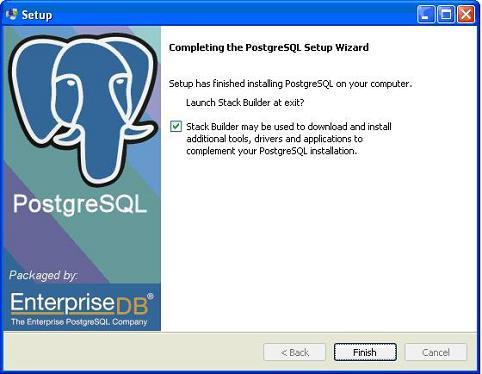
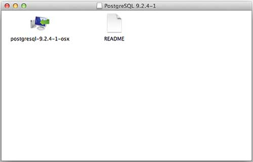
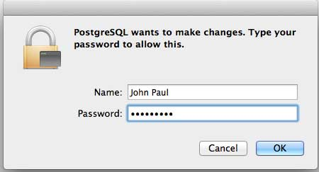
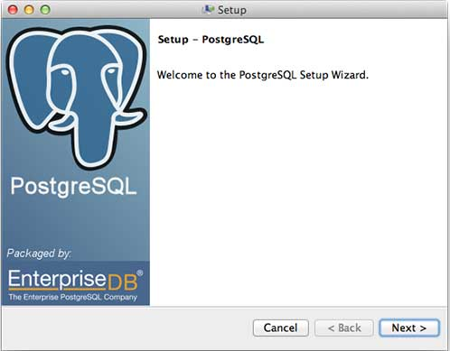
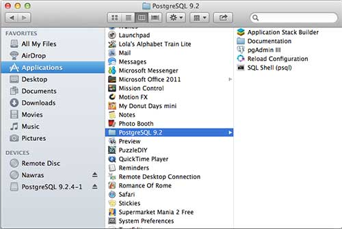
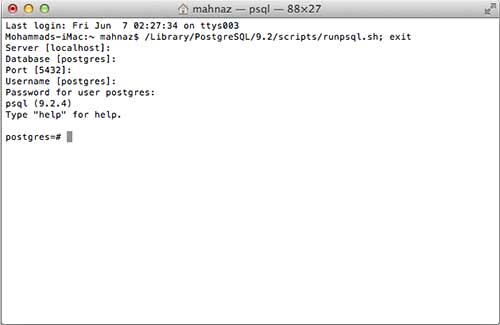

PostgreSQL Environment Setup
To start understanding the PostgreSQL basics, first let's install the PostgreSQL. This chapter explains about installing the PostgreSQL on Linux, Windows and Mac OS platforms.
Installing PostgreSQL on Linux/Unix
Follow the following steps to install PostgreSQL on your Linux machine. Make sure you are logged in as root before your proceed for the installation.
Pick the version number of PostgreSQL you want and, as exactly as possible, the platform you want from a EnterpriseDB
I downloaded postgresql-9.2.4-1-linux-x64.run for my 64 bit CentOS-6 machine. Now, let's execute it as follows:
[root@host]# chmod +x postgresql-9.2.4-1-linux-x64.run [root@host]# ./postgresql-9.2.4-1-linux-x64.run ------------------------------------------------------------------------ Welcome to the PostgreSQL Setup Wizard. ------------------------------------------------------------------------ Please specify the directory where PostgreSQL will be installed. Installation Directory [/opt/PostgreSQL/9.2]:
Once you launch the installer, it asks you few basic questions like location of the installation, password of the user who will use database, port number, etc. So keep all of them at their default values except password, which you can provide password as per your choice. It will install PostgreSQL at your Linux machine and will display the following message:
Please wait while Setup installs PostgreSQL on your computer. Installing 0% ______________ 50% ______________ 100% ######################################### ----------------------------------------------------------------------- Setup has finished installing PostgreSQL on your computer.
Follow the following post-installation steps to create your database:
[root@host]# su - postgres Password: bash-4.1$ createdb testdb bash-4.1$ psql testdb psql (8.4.13, server 9.2.4) test=#
You can start/restart postgres server in case it is not running using the following command:
[root@host]# service postgresql restart Stopping postgresql service: [ OK ] Starting postgresql service: [ OK ]
If your installation was correct, you will have PotsgreSQL prompt test=# shown above.
Installing PostgreSQL on Windows
Follow the following steps to install PostgreSQL on your Windows machine. Make sure you have turned Third Party Antivirus off while installing.
Pick the version number of PostgreSQL you want and, as exactly as possible, the platform you want from a EnterpriseDB
- I download postgresql-9.2.4-1-windows.exe for my Windows PC running in 32 bit mode, so lets run postgresql-9.2.4-1-windows.exe as administrator to install PostgreSQL. Select the location where you want to install it. By default it is installed within Program Files folder. 
The next step of the installation process would be to select the directory where data would be stored, by default it is stored under "data" directory

The next step, setup asks for password, so you can use your favorite password

The next step, keep the port as default

The next step, when asked for "Locale", I have selected "English, United States".
It takes a while to install PostgreSQL on your system. On completion of the installation process, you will get the following screen. Uncheck the checkbox and click on Finish button.

After the installation process is completed, you can access pgAdmin III, StackBuilder and PostgreSQL shell from your Program Menu under PostgreSQL 9.2.
Installing PostgreSQL on Mac
Follow the following steps to install PostgreSQL on your Mac machine. Make sure you are logged in as administrator before your proceed for the installation.
Pick the latest version number of PostgreSQL for Mac OS available at EnterpriseDB
I downloaded postgresql-9.2.4-1-osx.dmg for my Mac OS running with OS X version 10.8.3. Now, let's open the dmg image in finder and just double click it which will give you PostgreSQL installer in the following window:
Next, click on postgres-9.2.4-1-osx icon which will give a warning message, just accept the warning and proceed for further installation. It will ask for administrator password using the following window:
Enter the password and proceed for the installation and after this step, restart your Mac machine, if you do not see following window and after restarting start your installation once again.
Once you launch the installer, it asks you few basic questions like location of the installation, password of the user who will use database, port number etc. So keep all of them at their default values except password, which you can provide password as per your choice. It will instal PostgreSQL at your Mac machine in Application folder which you can check:
Now, you can launch any of the program to start with. Let's start with SQL Shell. When you launch SQL Shell, just use all the default values it displays except, enter your password which you had selected at the time of installation. If everything goes fine, then you will be inside postgres database and you will given be a postgress# prompt as shown below:

Congratulations!!! Now you have your environment ready to start with PostgreSQL database programming.